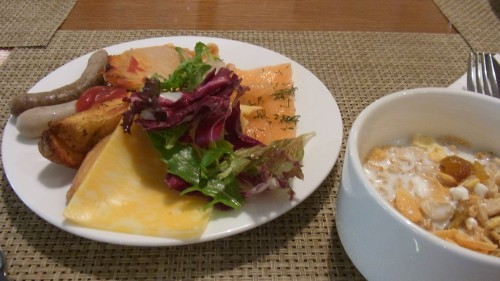

ICPC World Finals 2014 6日目～7日目
6日目 (2014/06/26)
9時くらいに起きて朝食を食べつつ、飛行機の時間までどうしようと相談する。

とりあえずRed-line tourで教えてもらった、ショッピングモールっぽいところに行ってみようという感じになる。
部屋に戻って、荷物をまとめる。ICPCグッズで荷物が増えてやばい。
ホテルのフロントに荷物を預けて、街歩きに出る。初日にもらった地図がやっと役に立った。
道中、歩道に人型が書いてあるのを発見する。ロシア語でなんか書いてあるけど読めない。読めたらたぶん面白いことが書いてあるんだろうなぁ。
ショッピングモールに着いた。今更だけど、こういうときに街並みの全体像を撮る習慣がないので、あとでこうやってまとめる時に困る。
目についた店にいくつか入ってみるも、あんまりおみやげっぽいものはない。とりあえず歩きまわってみる。
Starcups Coffeeという謎のカフェを見つけた。気になるけど入ってない。
変な車のオブジェをみつけた。
DNSという検索性悪そうなPCショップ。中をひと通り見てみたけど、日本と対して値段は変わらなかった。
でかいデパートを見つけたので入ってみる。案内板にロシア語しか書いていないので読めない。最上階になんかありそうな雰囲気なので、そこまで上ってみると、本屋があった。
見て回るも、そんなに大きい本屋でもなく、コンピュータ関連書籍も隅っこのほうで扱いが悪かった。mikecatさんが本をおみやげに買っていた。
この時点で13時くらいで、辺りをうろついていても収穫はなさそうなので、ホテルに戻ることにする。デパートを出たら、ちょうど雨が降ってきた。あまり強くはないものの、傘がないので急ぐ。
ホテルに戻って、近くの雑貨屋に行って、おみやげになりそうなものを適当に見つくろって買う。mikecatさんが「武士道」という名前のコーヒーを見つけて、なんだこれはと思って眺めていたら、ロシア人の青年に話しかけられた。どうもこのコーヒーはCoolだよ系のことをアピールをしているっぽかったが、残念ながらロシア語で言われてもわからない。適当に分かったような返事をしつつ、カゴに入れる。
送迎バスで空港まで行く。18:00発の便なのに空港に着いたのが16:00前で、時間が余りまくっているので空港をぶらぶらしていたら、Moscow State University - Tashkentの人に話しかけられた。最初Moscow State Universityだと言われておおお！と思ったら、2位とは違って僕らは分校のほうだよと言われた。それからコンテストの話とか、練習の話とか、来年からどうするの？とかそういう話をしばらくしていた。
結構話していた気がするけど、まだ搭乗まで1時間以上時間がある。ロビーにいても仕方ないので、検査ゲートだけ通って搭乗口で待つことにした。
搭乗口のそばに、ロシアで何度も見て気になっていた、Шоколадницаというカフェがあったのでria_raiくんと入ってみる。最初に応対した店員にロシア語が話せないと言ったら、英語が話せる人を連れてきてくれた。ロシア人も日本人と同じで、みんなが英語を喋れるわけじゃないんだなと思って少し面白かった。
バナナココアを注文。ホットで頼んだのにガラスの容器で持ってきて、間違えられたか？と思ったらちゃんと熱々だった。
味は普通。ココアにホイップクリームとバナナが入っている味。
飛行機に乗ってシェレメチェボ空港へ。着陸時に拍手が起こる。去年もそんなことがあったけど、ロシア文化なのだろうか。
予定では18:45に着いて、20:00の便に乗り継ぎするというギリギリのスケジュール。うまく行くんだろうかと思っていたら、飛行機を降りる前から既に様子がおかしい。ターミナルに付いているのに、タラップへのドアが開く様子がない。どうも何かトラブルがあったらしく、後ろから降りてバスでターミナルへ入ることになった。この時点で既に19:00くらいになっており、ちょっと不安になる。

チェックインカウンターまで来て、乗り継ぎ先の便を探すも見つからない。時間も押していて不安が高まる。……と、今いるところが国内線のチェックインカウンターであることに気付いた。国際線はもっと奥にあるらしいので、急いでそっちへ向かう。
チェックインしたら、時間がないから早く出国ゲート行けみたいなことを言われる。まあそれはそうだ。急いで出国ゲートがあると思われる方へ行く。途中でエレベーターに乗る必要があるのに、説明がまったくなくて、適当に行ったら正解だった。
出国ゲートはあまり並んでる人もおらず、結構サクサク進んでいく。この時点で40分ほど余裕があったので一安心。無事に出国ゲートを抜けて、搭乗口へ向かう。
搭乗口にはICPC勢ではない、高校生くらいの日本人集団がいた。とこはるさんが聞いたところ、重量挙げ大会の参加者らしい。そんなものもあるのかという感じだけど、世間的にはプログラミングコンテストの方が珍しいのかもしれない。
飛行機に搭乗。離陸するとき、アミューズメントシステムが突然落ちて再起動し始めた。起動シーケンスのメッセージによると、Red Hat Linuxを使っているらしい。initスクリプトがあちこちでWarningやFailedっぽいメッセージを吐いていて、ほんとに大丈夫かよと思った。
写真は着陸後にまた再起動を始めたので、そのときに撮ったもの。無事に再起動してゲームをしてみると、画像の表示がおかしい。
どうも、飛行機についてる外観カメラの映像が特定の描画領域をオーバーライドしているっぽい。ゲーム中も当たり前のように背景が動いているし、文字が一部変に透過されていて、カメラ映像っぽいものが透けている。結局着陸までずっとこの状態だった。
機内食。
フォーチュンクッキーが出てきた。 “You run a risk to fall in love this week.” らしい。
日本に着く。暑い。今度こそ自動化ゲートで入国する。指を置くだけで入れる簡単さの割に、使っている人が他にいなかったので、一瞬で入国が終わる。
荷物を受け取って税関通って終わり……、と思ったら、ria_raiくんの荷物が届いていない。乗り継ぎのとき、モスクワに置き去りにされてしまったらしい。係の人に聞くと、アエロフロートではしばしばあるとのこと。後日配達するように手配してもらって、係の人と一緒に税関を抜けていた。
帰りはバスにしようと思っていたけど、3時間後とかしかなかったので成田エクスプレスに乗ることにした。

Urfooとあずにゃん。
家に帰ってきたら、誰もいなくて入れなかった。仕方ないので荷物だけ置いて、橋本のガストで時間を潰して、頃合いを見計らって帰る。
最後の最後で変に疲れてしまったが、これで長いようで短かったWorld Finalも終わり。お疲れさまでした。